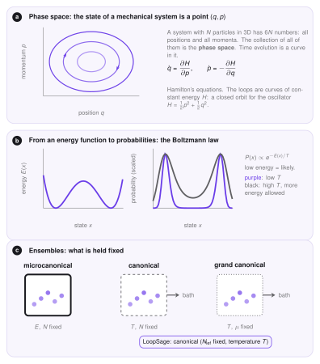
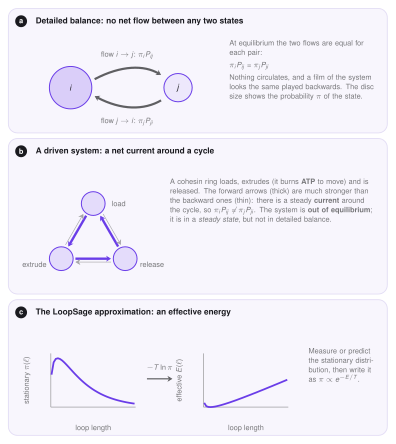

Mechanics of LoopSage¶
LoopSage assigns an energy to every set of loops and samples sets with probability \(\propto e^{-E/T}\). This page explains where that idea comes from, why it is only an approximation for a living cell, and which parts of the exact theory are kept. New words are explained as they appear, so you can read it whether you come from biology, physics, mathematics or computer science.
The mechanical Hamiltonian¶
In classical mechanics a system of \(N\) particles is described by the positions \(q\) and the momenta \(p\) of all particles. Together they form one point \((q,p)\) in the phase space, a space with \(6N\) coordinates (three positions and three momenta per particle). The Hamiltonian \(H(q,p)\) is the total energy as a function of this point: kinetic plus potential energy. For a simple oscillator, for example, \(H=\tfrac12p^2+\tfrac12q^2\). The Hamiltonian determines the motion through Hamilton's equations,
where a dot means the derivative with respect to time. As time passes, the system moves along a curve of constant energy.
This requires \(H\) to be differentiable: the force is the derivative of the energy, so a smooth energy landscape gives a well-defined motion. The energy of the loop model is not like that. A loop has integer positions \((m,n)\) on a grid of beads, so there is no derivative, and the loops do not follow equations of motion. Loop extrusion in LoopSage is a statistical model, and for it we keep only a weaker notion of the Hamiltonian, described next.

The statistical Hamiltonian¶
In statistical physics the Hamiltonian can be any function \(E(x)\) that gives the energy of a state \(x\), with no need for derivatives or motion. The probability of a state at temperature \(T\) is then given by the Boltzmann law,
Here \(Z\) is the partition function, the number that makes all probabilities add up to one. In plain words: low-energy states are likely, and the temperature \(T\) sets how much extra energy is tolerated. In LoopSage, \(T\) is given in arbitrary units, because the energy itself is built from effective terms (folding, binding, crossing) and not from physical joules. A state \(x\) is the complete set of loops \(\{(m_i,n_i)\}\), possibly together with the epigenetic states of the beads.
Intuition
Imagine a marble rolling on hilly ground that is being gently shaken. At low temperature (weak shaking) the marble spends nearly all its time in the deepest valley. At high temperature (strong shaking) it hops between valleys and explores the whole landscape. The Boltzmann law is the exact statement of how much time the marble spends at each height.
Ensembles¶
An ensemble is the set of all possible states together with their probabilities, under given conditions. The three classical ensembles differ in what is held fixed.
| Ensemble | Fixed | Exchanges with the outside |
|---|---|---|
| microcanonical | energy \(E\), particle number \(N\) | nothing (isolated) |
| canonical | temperature \(T\), particle number \(N\) | energy (a heat bath) |
| grand canonical | temperature \(T\), chemical potential \(\mu\) | energy and particles |
LoopSage uses the canonical ensemble: the number of extruders \(N_{\mathrm{lef}}\) is fixed, and the temperature \(T\) controls the fluctuations. This is why the Boltzmann law above is the right distribution, and why the Metropolis rule on the Monte Carlo page works. The grand canonical alternative, in which extruders appear and disappear, is mimicked by the rebinding move, where one ring is removed and another one is loaded.
A cell is not in equilibrium¶
The Boltzmann law describes a system in equilibrium. A cohesin ring is not in equilibrium: it burns ATP to extrude, and it loads and unloads in a cycle. Such a system is called driven.
What distinguishes equilibrium is detailed balance. Let \(\pi_i\) be the probability of state \(i\), and \(P_{ij}\) the probability to jump from \(i\) to \(j\) in one step. Detailed balance says that for every pair of states the two flows are equal,
Nothing circulates, and a film of the system looks the same when played backwards. In a driven cycle (load, extrude, release) the forward flow is much larger than the backward flow, so there is a steady current and detailed balance is broken. The system then reaches a steady state: the probabilities \(\pi\) no longer change with time, but they are not Boltzmann probabilities.

The LoopSage approximation¶
LoopSage does not model the driving. Instead it turns the problem around: whatever the stationary distribution \(\pi\) of the loops is, write it as
The energy is then an effective energy, \(E=-T\ln\pi\) up to a constant. It is not the physical energy of the ring, but a compact way of saying which sets of loops are likely. The terms of \(E\) are chosen to reproduce what is observed: long loops are favoured (folding), legs prefer CTCF sites (binding), and crossing loops are forbidden (crossing). The coefficients are fitted by the optimizer to Hi-C data or to the input loops.
This approximation has a clear limit. Equilibrium sampling gives the right average map and the right fluctuations, provided the effective energy is right, but it does not give the dynamics: the steps of the sampler are not real time, and currents such as the directed motion of a ring are replaced by random-walk moves. Questions about speed, residence times or the order of events need a model with real kinetics.
How detailed balance is approximated¶
The sampler (MCMC) is built so that it satisfies detailed balance with respect to \(e^{-E/T}\) by construction: a proposed move is accepted with the Metropolis probability, which makes \(\pi_iP_{ij}=\pi_jP_{ji}\) for the target distribution. Three design choices keep this approximately true in practice.
- Symmetric proposals. Sliding by \(\pm1\) is as likely as the reverse move, so the proposal does not bias the result.
- Rebinding as an approximation. The rebinding move (load a minimal loop anywhere) is not exactly the reverse of the extrusion, so it is a loading process rather than an exactly balanced move. With uniform loading it is close to symmetric. A loading track makes it deliberately biased towards the real loading sites.
- Annealing. With
method = Annealingthe temperature changes during the run, so the chain is not stationary until the end. Only the snapshots after the burn-in, when the temperature is close to its final value, are used for statistics.
In LoopSage
The energy terms and the temperature are described in Monte Carlo. The next page explains why the sampler converges to the Boltzmann distribution and how to check that it did.